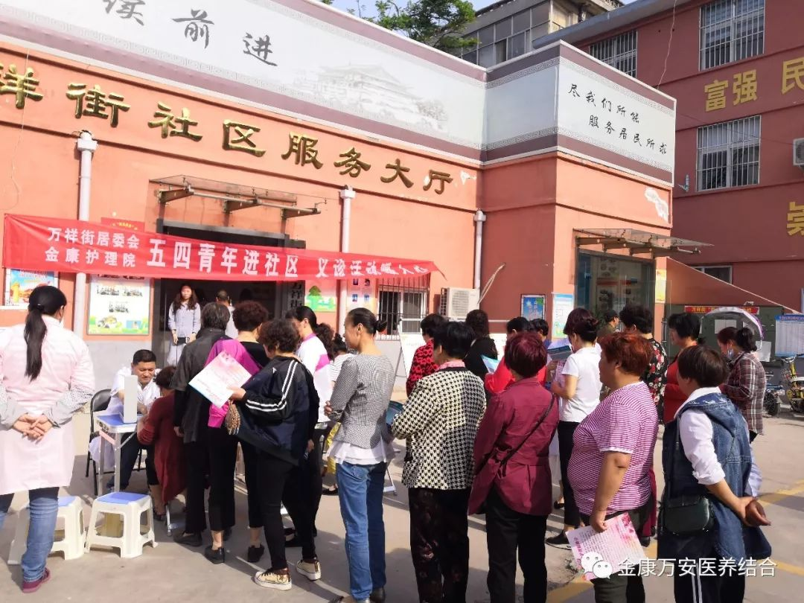

2018年5月4日上午，为承传五四精神，发扬青春风采，漯河金康护理院、万祥街社区卫生服务站组织医护人员走进万祥街社区开展志愿义诊活动。
此次义诊活动，我院选派了内科、康复科、妇科、外科等7名专家组成的医护团队参与此次义诊，活动项目包括社区常见病的免费咨询、免费测量血压、测血糖、发放各种疾病预防健康材料，向社区居民普及卫生保健等相关知识，帮助居民提高健康意识，增强预防疾病的能力。受到了广大群众的一致好评。共免费咨询和义诊群众120余人，测量血压、血糖100余人次，发放健康教育处方等宣传资料150余份。
此次活动不仅弘扬了“五四”精神，展示了我院当代青年医生朝气蓬勃、奋发向上的时代风貌，而且还提高了团队的凝聚力，增进医院与百姓的和谐关系。同时为社区群众带去了便利和健康，得到了社区居民的高度认可。